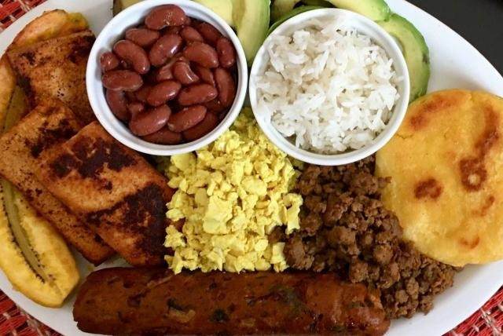

“En Itagüí, cada plato es una expresión de tradición y orgullo.”
Sabores con Identidad
La gastronomía de Itagüí refleja la riqueza cultural de su gente. Desde el tradicional sancocho antioqueño hasta las empanadas caseras, los sabores locales son símbolo de familia y unión. En la Plaza de Mercado, los visitantes encuentran productos frescos y preparaciones típicas que conservan las recetas de antaño.
- Comidas típicas: bandeja paisa, sancocho, arepa de choclo.
- Bebidas locales: aguapanela con queso, café artesanal.
- Espacios: Plaza de Mercado y parques gastronómicos.